Brand site
W*nder
Works like a W*nder
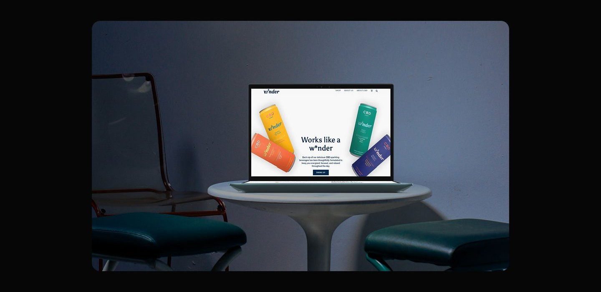
Overview
W*nder is a CBD infused sparkling beverage brand that has been specially formulated to accompany various moments throughout the day morning, noon, and night. This product comes in various variants that have different benefits, such as increasing energy in the morning helping focus at work, or providing a sense of calm at night. W*nder emphasizes transparency and quality by partnering with third party laboratories for product testing. Through a modern approach and a clean and informative branding style, Wender not only offers products, but also education about the benefits of CBD. The brand is also socially committed by donating 4.20% of their profits to communities affected by cannabis regulation.
Problem
- Many people experience stress, fatigue, and difficulty focusing in their daily activities.
- Lack of understanding about the benefits of CBD that is legal and safe to consume.
- Stigma towards cannabis based products due to long standing negative perceptions.
- It is difficult to find healthy drinks that are refreshing and provide a calming effect at the same time.
Solution
- Provides CBD infused beverages specially formulated to boost energy.
- Provides educational information and quality transparency with independent testing labs.
- Displaying branding that is clean, modern, and far from the conventional "cannabis" impression.
- Making social contributions with "The 420 Rule" program to help communities affected by previous cannabis policies.
My role
In this project, I worked as a UX/Ul Designer responsible for designing the experience and visual appearance of the W*nder homepage. My main focus is to build trust and educate users about CBD based products, which are still considered sensitive by some people. My design focus is to build trust by bringing transparency and education through an engaging and structured visual experience. My role covers end to end design from user flow, wireframing, UI design, to final prototyping by ensuring every visual element and interaction supports the brand's main objectives: build trust, educate, and encourage further product exploration. I also maintain consistency in tone & style so that the W*nder brand appears unique, trusted, and relevant to new users and those who are familiar with CBD.
Process
The design process for this project was divided into four key phases to ensure a user centered and results experience: 1. Discovery In the Discovery phase, I started by conducting a competitor analysis to understand how other CBD brands approach safety and transparency messaging. This analysis helped me identify pain points that are often found in the industry such as a lack of lab test information or a confusing website interface. I also dug deeper into the characteristics of W*nder's users and target audience, including their need for clarity, credibility and education around CBD. 2. Ideation yet horative fol, savinate sers cold dis Next, I developed a user flow and user journey map to map out how users would navigate the site and interact with the information provided. My main focus was to create a simple yet informative flow, so that users could easily understand the benefits of W*nder and access product test results in just a few steps. This process was crucial to ensure the user experience remained intuitive despite the educational and technical nature of the content. 3. Design Process Moving into the Design System phase, I designed visual guidelines that are consistent and reflect the brand identity. I chose a o the normale. also establish warm yet trustworthy color palette to convey a safe and friendly impression, and clean and easy to read typography to support the readability of the information. I also established a neat grid system so that each element on the page has a harmonious visual rhythm and is easy to navigate. 4. Usability Testing In the Usability Testing phase, I developed a set of tasks and scenarios to test the effectiveness of the design. Users were asked to run scenarios such as searching for product test results, understanding the benefits of CBD, and finding the variant that suits their needs. From this, I gained valuable insights on which flows needed to be simplified and which elements were successful in attracting users' attention. This feedback was then used to refine the design to be truly user centric and conversion oriented.
Discovery
Discover and Understanding The discovery process begins with understanding the key issues that users face in the CBD industry, specifically related to product trust and safety. Amidst the rapid growth of the CBD market, many users find it difficult to distinguish legitimate and tested products from those that are not. W*nder wanted to assert its position as a transparent and trusted brand by presenting lab result information openly. Therefore, I needed to design a digital experience that would convey this message in a powerful and accessible way to the target audience.
Competitor Analysis As part of my strategic approach, 1 analyzed several key competitors to understand how they present information related to product quality and lab test transparency. My focus was on elements such as page structure, educational messaging, navigation, and accessibility to test data. This analysis helped identify design gaps and opportunities that could be used to strengthen W*nder's position against competitors.
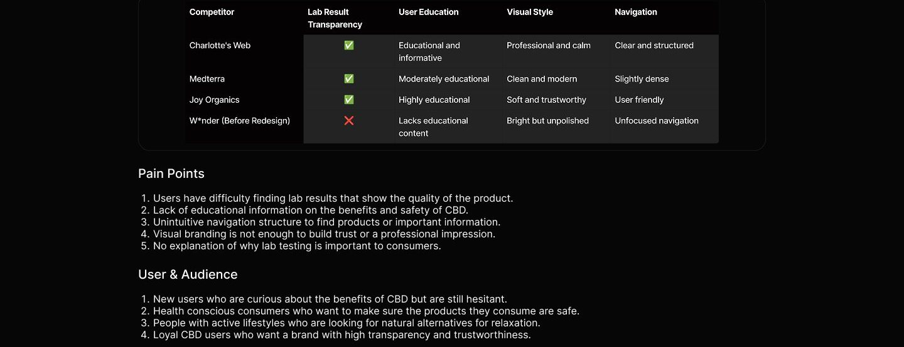
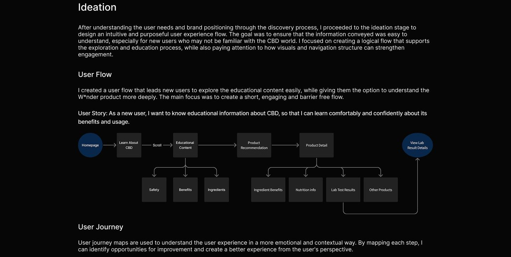
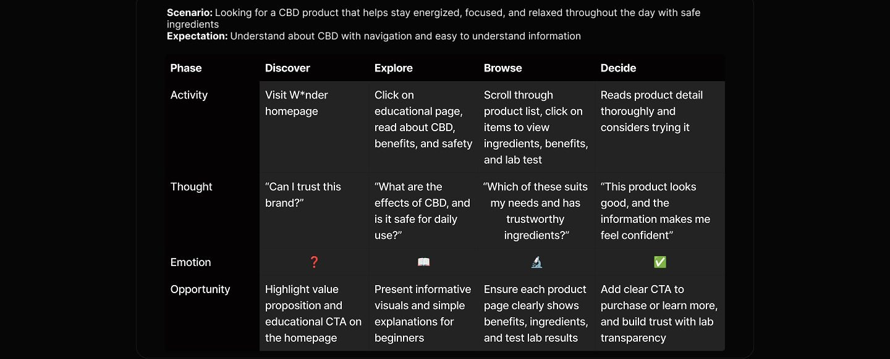
Design system
To ensure visual consistency and strengthen brand identity, I created a simple yet cohesive design system tailored for W*nder's educational and product-focused interface. The color palette combines soft neutrals with energizing accent tones to reflect both the calm and focus associated with CBD, while also evoking a sense of trust and clarity. For typography, I chose clean and legible typefaces that maintain readability across different screen sizes, aligning with the brand's modern and informative tone. Lastly, I applied a responsive 12-column grid system that supports flexibility in layout.
Design System
Color
Primary Color
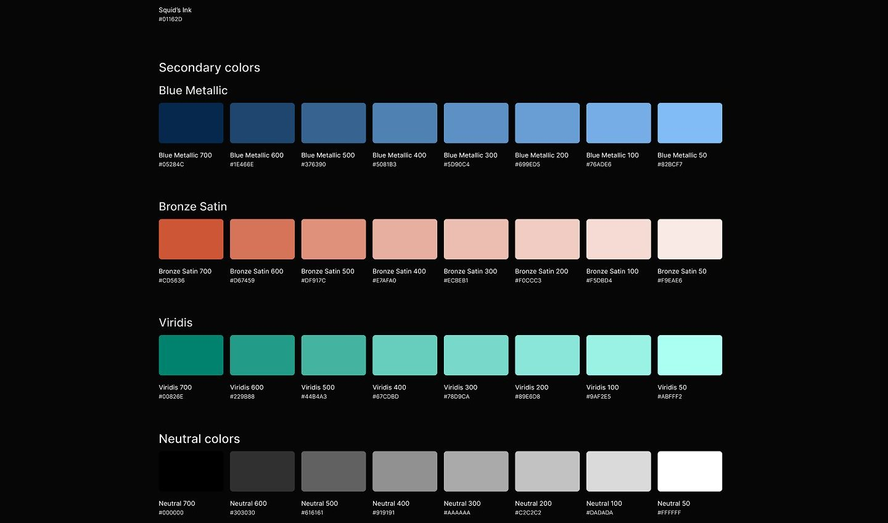
Typography
Asul ABCDEFGHIJKLMNOPQRSTUVWXYZ abcdefghijklmnopqrstuvwxyz 1234567890
Button
< Label Label
Label > Label
Label Label >
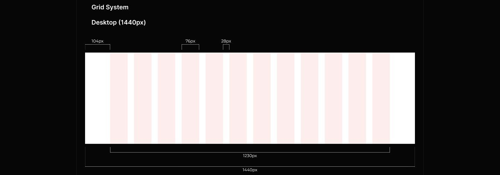
Final design
This design consists of two pages: Homepage and Lab Test Results. I will describe both pages in each section because all sections have important information to understand this project better.
Homepage Hero Section: Works like a W*nder
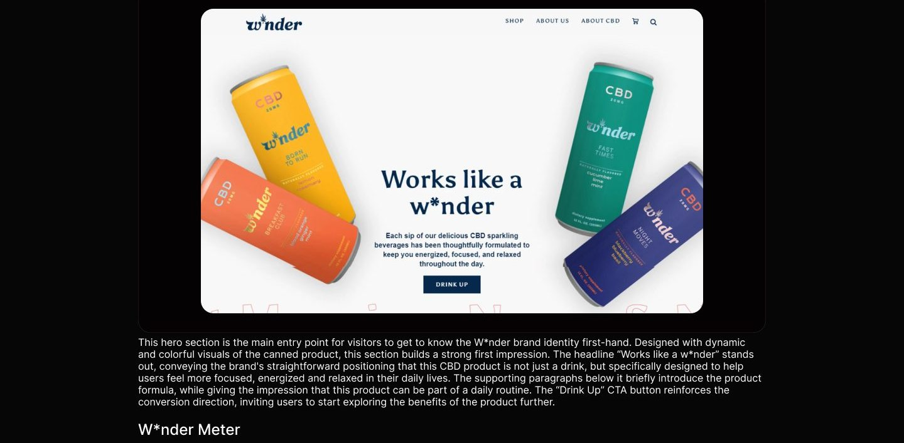
t Morning, Noon, & N orning, Noon, & Nigh
DRINK IN THE MORNING There's a W*nder for energy You can enjoy any of our beverages any time of day, but some are best served at specific times. Use our W*nder Meter to find out how to get the most out Hover over the dots to learn about each Winder flavor. of your CBD.
GET BREAKFAST CLUB
This section serves as an educational tool to help users understand that each W*nder variant has a function and optimal consumption time of morning, afternoon or evening. The visual "W*nder Meter" is depicted in the form of a clock or dial, which shows the recommended consumption points for each variant. By hovering over each point, the user can see each variant. This is also very helpful for users who are new to CBD, as it provides guidance on when to consume certain products for maximum results. On the right side, additional information is explained in a light but informative copy style, such as that the product can be consumed at any time, but has the best effect at a certain time. The "Get Breakfast Club" CA is also a follow up path for users who want to engage more deeply, expanding the possibility of long term interaction.
Proof & Trust
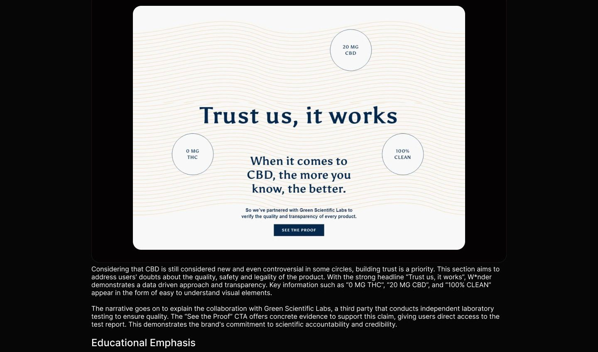
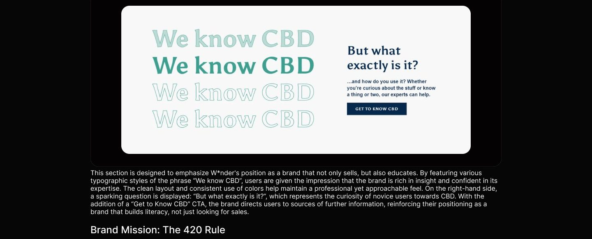
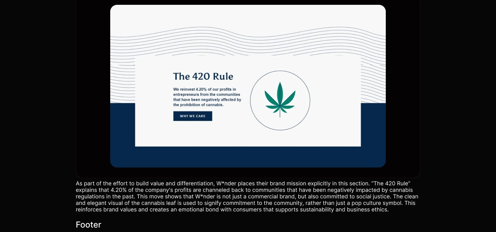
As the conclusion of the overall user experience on the main page, this footer plays an important role in organizing secondary information while reinforcing a sense of trust. Navigation is clearly divided into categories such as "About CBD", "Test Results", and "Shipping & Returns". The newsletter column invites users to join and get regular updates, creating further conversion opportunities. On the bottom right, there are important disclaimers regarding the use of the product including warnings for pregnant and breastfeeding mothers that demonstrate the brand's responsibility for consumer safety. Copyright information, privacy policy, and links to social media reinforce the brand's professional image and make it easy to access additional support and information.
Test Result Page Is your CBD legitimate and safe?
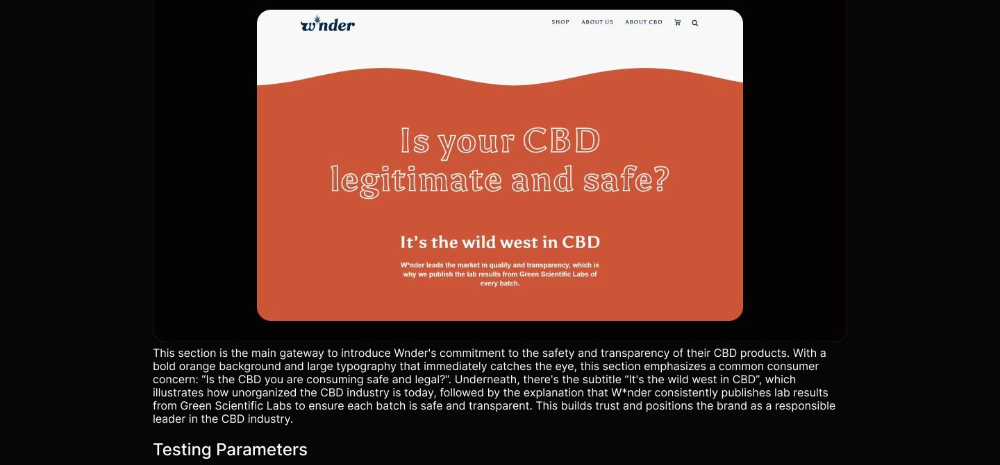
W*nder is tested for the following
RESIDUAL HEAVY MYCOTOXIN
THC MATERIALS ACTIVITY
The second section presents a comprehensive list of testing parameters conducted on Wnder products, with a clean and minimalist circle design style for each item. There are 9 key points tested: CBD, Microbials, Pesticides, Mycotoxins, Residual Solvents, Heavy Metals, Foreign Materials, Water Activity, and THC. As the user hovers over each item, the benefits of each parameter appear, providing additional education and proving that W*nder pays attention to every important aspect of product safety. This interaction provides an educational and transparent user experience.
Product Lab Result
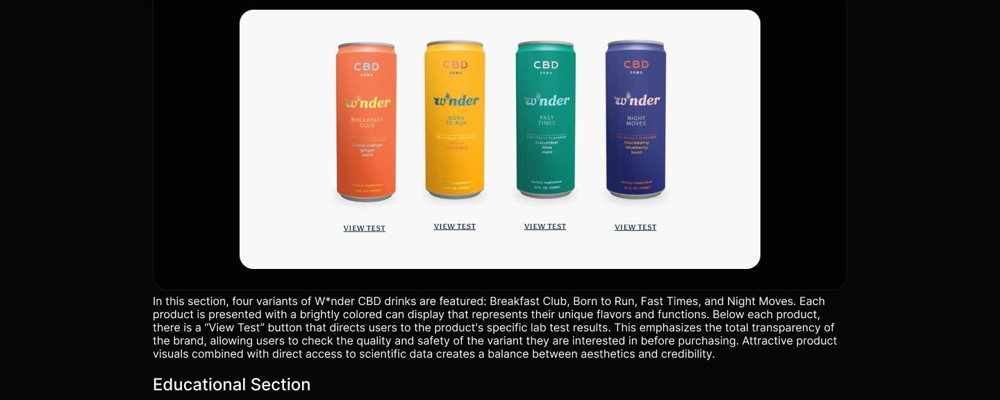
We know CBD But what exactly is it and how do you use it? Whether you're curious about the stuff or know a thing or two, our experts can help. GET TO KNOW CBD
This section serves as an invitation to learn more about CBD. With the friendly and affirmative heading "We Know CBD", this section offers help to users who are unfamiliar or want to know more about the benefits, workings, and uses of CBD. Reinforced by a flat design illustration of a CBD bottle with subtle animation, this section gives a lively and informative feel. There is also a "Get to Know CBD" button that encourages users to explore other educational pages of W*nder. This section is very useful for building the brand as a trusted source, not only as a seller, but also as an educator in the field. Footer
The closing section includes quick navigation to important pages such as About Us, Shipping & Returns, as well as a form to sign up for the newsletter. In the center is a "Get Updates" form for users who wish to receive the latest product announcements or information via email. On the right side, there is an important disclaimer from W*nder regarding FDA regulations and who is not recommended to consume CBD products, including pregnant and nursing mothers. This section reflects the brand's legal and ethical responsibility, showing that they are not only transparent, but also compliant with health regulations. The visuals remain minimalistic ensuring the focus remains on the important information.
Usability testing
To evaluate the usability, effectiveness and user satisfaction levels of the W*nder product, I conducted a series of moderated usability testing sessions with participants who represented first-time visitors interested in healthy and safe beverage solutions to support work productivity. The participants had an interest in CBD-based products, but also had concerns about their safety and health benefits. Therefore, the test was designed to simulate how users naturally explore and evaluate products before making a purchase decision. In each session, participants were presented with realistic scenarios that reflected the user's process of deciding. The scenarios given were as follows: 1. You need a drink that can energize you for work. You hear that W*nder is the solution that can solve your problem, but you are not sure if this product is safe for health. So you want to get to know this product first. What steps do you take? 2. After looking at the product information, you feel unsure about consuming it. You need more detailed product information. How do you look for it? 3. By looking at the benefits of the ingredients, you already feel pretty confident but haven't found strong information to buy this product. What should you do? 4. After finding the lab test results, you are very confident to buy this product. How do you buy it? Through this scenario, the test focused on how users navigated the W*nder home page to find information about the product, safety, and health benefits. It also assessed how clearly the brand's values and mission were communicated, how easy it was to access information such as lab test results and ingredient descriptions, and how easy it was for users to find CTA buttons such as "View Test" "Get to Know CBD", and "Shop". The results of this test are expected to identify points of friction, the strength of the home page and test result page in building trust with new users, and provide recommendations to improve the overall user experience.
Reflection
If I had additional time, I would: 1. Conduct additional user research to explore more issues that may not have been revealed and gain new insights from the user's perspective. 2. Conduct usability testing using the tasks and scenarios that have been created, in order to measure the effectiveness of information flow, navigation, and user confidence in the product. 3. Resolve any issues found and improve areas that are still lacking to make the user experience more intuitive and convincing. 4. Iterate on the design to improve visual quality and functionality, and ensure that the final design truly meets the user's needs.